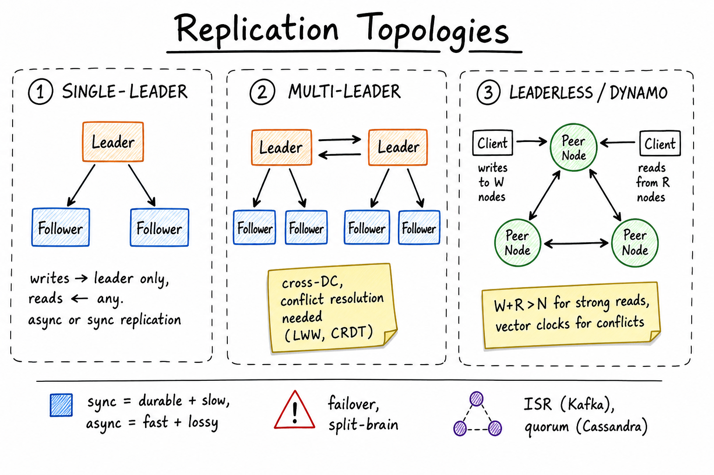

Replication Strategies // Concept Primer
Copy the same data to N machines. Buys durability, read scale, fault tolerance, and locality — at the cost of consistency, write latency, or correctness during partitions. The choices: single-leader, multi-leader, leaderless; sync or async; quorum size.

Three topologies side by side: single-leader (one writer, many followers), multi-leader (two leaders syncing across DCs with conflict resolution), and leaderless / Dynamo-style (W writes, R reads, peer nodes).
01 — What Problem It Solves
Replication is the answer to four very different questions:
- Durability — one disk dies, data survives on others. N=3 typical.
- Read scaling — ten followers absorb ten times the reads.
- Availability — if the primary crashes, a replica takes over.
- Locality — replicas near the user reduce latency.
The "right" replication strategy is whichever buys you the property you actually need without breaking the consistency story your application has implicitly promised users.
01a — Core Vocabulary
| Term | Definition | Notes |
|---|---|---|
| Leader / Primary | The single node that accepts writes for a shard. | Postgres primary, MongoDB primary, Kafka partition leader. |
| Follower / Replica / Secondary | Read-only copy that applies the leader's write log. | aka standby in Postgres, ISR in Kafka. |
| ISR (In-Sync Replicas) | Kafka term: replicas caught up to within a threshold. | Only ISR can be elected leader on failure. |
| Replication lag | How far behind the leader a follower's apply log is. | Measured in seconds or bytes. Spikes during load. |
| Sync vs Async | Sync = client gets ack only after N replicas have written; async = ack immediately, replicas catch up. | Sync = durable + slow; async = fast + may lose committed writes on crash. |
| Semi-sync | Wait for one replica to ack, others async. | MySQL semi-sync, Postgres synchronous_commit=remote_apply. Good middle ground. |
| Quorum | Subset of nodes whose agreement counts as a decision. | Majority quorum: N/2+1. Used by Paxos/Raft. |
| W, R, N | N = total replicas, W = ack count for write, R = nodes contacted for read. | If W+R > N, reads see latest write (Dynamo). |
| Split-brain | Two nodes both think they're leader after a partition. | Resolved by fencing tokens, quorum, or external lock. |
| WAL / Binlog / Oplog | Append-only log of changes shipped to replicas. | Postgres WAL, MySQL binlog, MongoDB oplog. Source of truth for replication. |
02 — Approaches
| Strategy | How it works | Pros | Cons |
|---|---|---|---|
| Single-leader | One node accepts writes; replicas pull/receive log entries. | Simple. No write conflicts. Easy mental model. | Leader is a write bottleneck. Failover required on crash. |
| Multi-leader | Two or more leaders accept writes; each propagates to the other. | Write availability during partition. Better cross-DC latency. | Conflict resolution mandatory (LWW, CRDTs, app-level merge). |
| Leaderless (Dynamo) | Client (or coordinator) writes to W of N nodes; reads from R. | No failover — any node works. Tunable consistency via W,R. | Conflict reconciliation on reads (read-repair, vector clocks). |
| Chain replication | Writes flow head → tail; reads at tail. | Strong consistency, simple correctness proof. | Latency = chain length. Failure handling complex. |
| Consensus-based (Raft/Paxos) | Replicated state machine via consensus log. | Linearizable, automatic leader election. | Requires majority quorum (2f+1). Latency cost. |
Heuristic: single-leader for OLTP databases (Postgres, MySQL, Mongo). Leaderless for high-availability KV stores (Dynamo, Cassandra). Multi-leader for cross-DC active-active (Cassandra, CouchDB, CRDT systems). Consensus for metadata that must be linearizable (etcd, ZooKeeper, Spanner).
04 — Sync vs Async Replication
Async (default in most systems)
1. Client sends write to leader 2. Leader appends to WAL, replies OK 3. Leader streams WAL to followers (lag varies) + Low write latency (~1 RTT) + Followers can be slow without blocking writers - Leader crash → UNACKNOWLEDGED writes may not exist on any follower - "Phantom write": client got 200, data isn't there after failover
Sync
1. Client sends write to leader 2. Leader appends to WAL, replicates to ALL/ONE follower 3. Replies OK only after follower(s) ack + Guaranteed durability on N nodes - Latency = slowest follower - Any slow follower blocks writes (operational risk)
Semi-sync (practical sweet spot)
Leader waits for one follower to ack the WAL receipt, then replies. Others lag async. Bounded data loss (1 record) on leader crash. Used by MySQL semi-sync, Postgres synchronous_commit=on with one named standby.
Senior framing: never say "we'll do async replication" without naming the data loss budget on failover. RPO (Recovery Point Objective) is the question; the answer drives sync/semi-sync/async.
05 — Failover and Split-Brain
Manual failover
Operator declares the leader dead, promotes a replica, updates clients. Slow (minutes) but safe.
Automatic failover
Split-brain
Network partition isolates the leader from the health checker but not the clients. Health checker promotes a replica → two leaders. Both accept conflicting writes.
Prevention:
- Quorum — leader can only commit if it sees majority. Old leader on the minority side stops accepting writes.
- Fencing tokens — monotonic generation id; storage rejects writes with stale token.
- STONITH ("shoot the other node in the head") — hard-fence via power management.
Postgres + Patroni uses etcd as the source of truth: a leader who can't refresh its etcd lease demotes itself. Same model as Kubernetes leader election.
06 — Replication Lag and Read Anomalies
Async replicas always lag. Symptoms experienced by users:
| Anomaly | Scenario | Fix |
|---|---|---|
| Read-your-writes violation | User updates profile, immediately refreshes, sees old data (read hit a stale replica). | Pin user's reads to leader for ~5s post-write; or pass write-LSN cookie and replica blocks until caught up. |
| Monotonic-read violation | User refreshes twice; second read shows older data (different replica). | Session pinning — same client always hits same replica. |
| Causal anomaly | You see B's reply to A's comment before seeing A's comment. | Causal consistency via vector clocks (rarely worth it) or app-level ordering (more typical). |
| Stale aggregate | Dashboard shows "total orders" lagging real-time by 10s. | Accept it; document the SLA. |
See Consistency Models for the formal hierarchy.
07 — Quorums (W + R > N)
Leaderless / Dynamo-style systems make consistency tunable per request.
N = total replicas (typically 3) W = writes that must ack (1..N) R = reads that must respond (1..N) If W + R > N: every read overlaps with every write → sees latest. If W + R <= N: reads MAY return stale data.
Common configurations
| Profile | N | W | R | Property |
|---|---|---|---|---|
| Strong (quorum) | 3 | 2 | 2 | Tolerates 1 failure, strong reads. |
| Fast write | 3 | 1 | 3 | Low write latency, slow reads. |
| Fast read | 3 | 3 | 1 | Slow writes, fastest reads. |
| Eventual | 3 | 1 | 1 | Both fast, may be stale (DNS-like). |
Quorum reads still need read-repair: if two replicas disagree, push the newest version back to the laggard. Plus periodic anti-entropy (Merkle-tree diff) to catch silent drift.
08 — Conflict Resolution
Any time two writes happen "concurrently" on different replicas (multi-leader or leaderless), you need a rule for which wins.
| Strategy | How | Tradeoff |
|---|---|---|
| Last-Write-Wins (LWW) | Stamp every write with a timestamp; later wins. | Lossy — concurrent updates silently overwrite. Clock skew = wrong winner. |
| Vector clocks | Track per-replica counters; detect concurrent vs causally-ordered. | Surface conflicts to app for resolution (Dynamo style). App must know how to merge. |
| CRDTs | Data types (G-Counter, OR-Set, LWW-Register, Yjs) with provably commutative merge. | Automatic resolution; constrains data model. Used by Riak, Redis CRDT, collaborative editors. |
| App-level merge | On conflict, present both versions to user (Git, Dropbox, calendar invites). | Correct semantics, ugly UX. Often unavoidable. |
| Quorum + serialization | Single writer per key via Paxos/Raft (Spanner, etcd). | No concurrent writes possible → no conflicts. Costs latency. |
For interview: name LWW and its clock-skew failure, then mention CRDTs as the correct alternative for replicated counters / sets / text documents.
09 — Cross-Region Replication
Patterns
| Pattern | Use case | Tradeoff |
|---|---|---|
| Single primary region | One region writes; others are async read-replicas. | Simple. Other regions have stale reads + slow writes (cross-region RTT). |
| Active-active multi-leader | Each region accepts writes; sync via cross-region log. | Conflict resolution required. Used by Cassandra, CouchDB. |
| Geo-sharding | EU users' data in EU, US users' in US. Single leader per shard. | Avoids cross-region writes for the common case. Compliance friendly (GDPR data residency). |
| Synchronous quorum across regions | Spanner: writes wait for majority across 3+ regions. | ~50-100ms write latency. Strong consistency globally. |
Cross-region latency budget: intra-AZ ~0.5ms, intra-region ~2ms, US-east <-> US-west ~70ms, US-east <-> EU ~80ms, US-east <-> Singapore ~200ms. Sync replication across regions is unavoidably slow.
10 — Where It Shows Up
- Key-Value Store — W,R,N tunable quorum.
- Payment Gateway — sync replication for ledger durability.
- Food Delivery — regional brokers with async cross-region.
- Uber — geo-sharded driver state with async backup region.
- WhatsApp — per-conversation leader, follower for reads.
- Stock Exchange — chain or consensus replication for the matching log.
- Kafka — per-partition leader, ISR-based commits.
- Postgres — streaming WAL, sync/async per replica.
- Cassandra — leaderless with tunable consistency.
- Redis — primary/replica, Sentinel for failover.
Related primers: Sharding, CAP/PACELC, Consistency Models.
11 — Common Interview Probes
- "How do you fail over a Postgres primary without data loss?"
- "User updates profile, immediately refreshes, sees old data. Fix it."
- "What happens on network partition between two leaders?"
- "Compute W and R for: N=5, want strong reads, tolerate 2 failures."
- "How does Kafka guarantee a committed message isn't lost?"
- "Why does Spanner replicate synchronously across regions and Dynamo doesn't?"
- "Last-Write-Wins — when does it silently corrupt data?"
12 — Interview Q&A
Sync vs async — which would you pick?
Depends on RPO. Banking ledger: semi-sync minimum — one ack from a paired replica before client OK. Web app session store: async is fine; a few lost sessions on failover are tolerable. Always pair the choice with an explicit data-loss budget.
How do you do automatic failover without split-brain?
External coordinator (etcd, ZooKeeper) holds a lease the leader must refresh. On lease expiry, coordinator picks the most caught-up replica (highest LSN among ISR), issues a new fencing token, promotes it. Storage layer rejects writes with stale tokens. Postgres+Patroni, Kafka with ZK, Redis Sentinel all use this pattern.
What does W+R>N actually buy you?
Every read intersects with every write in at least one replica, so the latest write is visible to a read — provided you take the highest-version reply. It doesn't give linearizability (no real-time order across keys, concurrent writes can still race). It's "strong-ish" quorum consistency.
User updates profile, refreshes, sees old data. Fix?
Three options: (1) pin reads to leader for 5-10s after the write (sticky session by user_id); (2) return the LSN with the write response and pass it on subsequent reads — replica blocks until caught up; (3) read the user's own data from leader, everyone else from replicas. Option 2 (LSN cookie) is the most general; AWS Aurora and DynamoDB both implement it.
How does Kafka guarantee no data loss?
acks=all + min.insync.replicas=2 on a topic with replication.factor=3. Producer waits for 2 replicas (leader + 1 follower) to persist. If fewer than 2 ISRs exist, broker refuses the write. On leader crash, only an ISR can be promoted → no data loss but availability impact if too many followers lag.
When is multi-leader actually a good idea?
Active-active multi-DC where local writes are non-negotiable (low latency, offline tolerance) AND your data model naturally avoids conflicts (CRDTs, append-only events, per-user partitions). Bad idea for traditional RDBMS workloads — conflict resolution is gnarly.
Last-Write-Wins — what can go wrong?
Clock skew → an older write with a faster clock overwrites a newer write. Concurrent updates to different fields of the same row silently lose one of them. Cassandra's default is LWW; the fix is to use logged counters, CRDTs, or app-level conditional writes (CAS / lightweight transactions).
What's a fencing token?
Monotonically increasing id assigned to each newly elected leader. Every write the leader issues includes its token; storage compares to the highest token seen and rejects older. Prevents a deposed leader from continuing to write after a network blip put it on the minority side and the cluster already moved on.
How does Spanner achieve linearizable cross-region writes?
Paxos consensus over the WAL across replicas in different regions; TrueTime (GPS + atomic clocks) bounds clock uncertainty to ~7ms; writes pause to wait out the uncertainty so externally-consistent global timestamps can be assigned. Cost: 50-100ms write latency. Few systems can afford it.
Read-repair vs anti-entropy?
Both fix divergence in leaderless systems. Read-repair: at read time, compare replies; push the newest version back to laggards in-band. Catches actively-read keys. Anti-entropy: periodic background job (Merkle-tree comparison) that finds divergence on cold data. Cassandra runs both.
What's ISR and why does it matter?
In-Sync Replicas in Kafka: replicas that are within replica.lag.time.max.ms (default 30s) of the leader. Only ISRs are eligible to become leader on failover. A replica that falls behind drops out of ISR and won't be elected — preventing data loss but reducing the failover set.
SDE2 vs SDE3 differentiator?
| SDE-2 | SDE-3 |
|---|---|
| Names single-leader vs multi-leader vs leaderless. Knows sync = slow + durable. | + semi-sync as default for OLTP, fencing tokens, ISR semantics, W+R>N math, read-repair vs anti-entropy, RPO/RTO framing, CRDTs vs LWW vs vector clocks, cross-region latency budget, geo-sharding as the practical alternative to global sync replication |